1 Introduction
Ice hockey is among the least predictable of the major professional sports. Goals are rare, around three per team per game, and a single deflection can decide a result, so even a large difference in team quality translates into a modest difference in win probability (Ben-Naim et al. 2006; Lopez et al. 2018). For the National Hockey League (NHL) the consequence is a narrow band of achievable skill. On our tuning seasons a constant home-win rate scores a log loss of 0.6887 per game and a tuned Elo system (Elo 1978; Hvattum and Arntzen 2010) scores 0.6759. Betting markets, the usual reference for the best achievable forecast (Štrumbelj 2014), are better still; our plans worked with a rough closing-line figure of 0.66, which we could not verify because the project uses no market data. The competition between forecasting methods therefore takes place inside a few hundredths of a nat, and a genuine improvement over a good rating system is a few thousandths.
Effects that small are fragile. Repeatedly trying configurations against the same held-out seasons will eventually produce one that looks better by chance (Simmons et al. 2011; Gelman and Loken 2014), and information that leaks from the future into features produces gains that vanish in use (Kaufman et al. 2012; Kapoor and Narayanan 2023). A model with no skill at all would clear a 0.002-nat improvement bar on our tuning window by chance about 23% of the time (Section 4). Preregistration, the practice of committing hypotheses, analyses and decision rules before the data that test them exist, is now standard in parts of the experimental sciences (Nosek et al. 2018), and templates for preregistering predictive models have been proposed (Hofman et al. 2023), but it remains rare in the predictive modelling of sport.
This paper reports NeurHL, a system that forecasts NHL games, skaters and seasons, built across four successive preregistrations. Each plan was committed to the project’s repository before any number that tested it was computed, and the repository, with its full history, is public. Seasons were assigned to development, tuning, confirmation and live roles before any model was fitted, and the code refuses to score across those boundaries. Every configuration searched was logged against a declared cap. Each confirmatory test was run once, after a freeze commit, by a script that refuses a second run. The record of what failed is kept as carefully as the record of what worked.
Our contributions are:
A preregistration protocol for sports forecasting with season windows, guarded data loaders, causality audits that corrupt the future and require the past to be bit-identical, capped search ledgers, one-shot tests, and a live scoring rule under which a forecast counts only if it is publicly committed before its game starts (Section 4).
A confirmed game-level improvement over Elo. NeurHL-H conditions on the dressed lineup through a neural player-level model and combines the result with Elo in a four-feature logistic head. On 10,184 held-out games it improves log loss by 0.00478 (95% CI 0.00306 to 0.00650), in all eight seasons, and increases Elo’s skill over the home-win base rate by about a quarter (Section 6.2).
A confirmed player-game model of ice time, shots, goals and assists that beats each skater’s own recent average on all four targets (Section 6.1).
NeurHL-G, a single-game simulation engine that produces a full box score from the two lineups. Ice time is conserved exactly by construction, player outputs sum to team totals, and the outcome comes from a differentiable integration of a score-and-time hazard over the goal differential. It beats Elo on its gate seasons but adds no demonstrable win-probability information beyond NeurHL-H, so its sealed test was not spent (Section 6.3).
A record of null results and failure modes (Sections 6.5 and 7): pooled neural event embeddings that carry no team-strength signal; tree ensembles and wide networks that do not beat Elo; two leaks that passed every realism gate; a recording drift that changed what a shot location means; and implementation errors in our own gates, one of them found while writing this paper.
Section 2 places the work in context, Section 3 describes the data, Section 4 the protocol and Section 5 the models. Section 6 reports results, Section 7 the failures and corrections, Section 8 the prospective test running during the 2026–27 season, and Section 9 what we take from all of it. We name seasons by the year in which they end, so 2018 is the 2017–18 season.
2 Related work
Rating systems and game forecasting.
Elo’s rating system (Elo 1978) updates a scalar strength after each result in proportion to the surprise. In association football it has been shown to be a strong basis for match forecasts (Hvattum and Arntzen 2010), and variants with margin-of-victory multipliers and between-season regression are widely used for the NHL; Whelan and Klein (2021) generalise the related Bradley–Terry model to hockey’s regulation, overtime and shootout outcomes. Goal-based models descend from the independent Poisson model of Maher (1982) and its dependence correction by Dixon and Coles (1997), and Kaplan et al. (2014) derive in-game win probabilities from a Markov model of goal and manpower differentials. For NHL games, Weissbock et al. (2013) classified winners from traditional and possession statistics and reached about 59% accuracy, well below what similar methods achieve in other sports, and Gu et al. (2019) combined player and team data in ensemble learners. Both findings fit analyses that place hockey among the most random of the major sports (Ben-Naim et al. 2006; Lopez et al. 2018). Betting markets are the usual reference for the best achievable forecast (Štrumbelj 2014; Wunderlich and Memmert 2021); our protocol excludes market data from every modelling step, so we do not report market comparisons for historical seasons.
Player evaluation in hockey.
Adjusted plus-minus separates a player’s contribution from his teammates’ and opponents’ by regression on shift-level data. Macdonald (2011) introduced a regression-based adjusted plus-minus for NHL players and Macdonald (2012a) a ridge-regularised version (Hoerl and Kennard 1970) with shot-based outcomes, while Gramacy et al. (2013) estimated player contributions to goals with regularised logistic regression and found most players indistinguishable from average. Thomas et al. (2013) modelled the scoring process itself, with player effects entering competing hazard functions, the structure our event simulator and NeurHL-G build on; they also found that both teams score at higher rates when either leads than when the score is tied, a score effect our hazard table represents. Shot-level models that give each shot a scoring probability from its location and context go back at least to Krzywicki (2005), and Macdonald (2012b) used an expected-goals measure built from event counts as a target for adjusted plus-minus. The public shot data we use are recorded by the league and redistributed by MoneyPuck, whose own model outputs we exclude.
Neural models of events and tabular data.
Neural temporal point processes (Mei and Eisner 2017; Zuo et al. 2020) generalise the self-exciting process of Hawkes (1971) and are a natural model for a stream of game events. On tabular problems, tree ensembles (Friedman 2001; Chen and Guestrin 2016; Ke et al. 2017) remain difficult for deep networks to beat (Grinsztajn et al. 2022; Shwartz-Ziv and Armon 2022), which is why our model ladders always include a gradient-boosted rung. Surveys of machine learning for sport outcome prediction (Bunker and Thabtah 2019; Horvat and Job 2020) review a wide range of models, features and evaluation designs; our contribution is less a new model class than a stricter evaluation discipline applied to several. Stacking (Wolpert 1992; Breiman 1996) combines forecasts through a second-level model; we use it to combine NeurHL-G, NeurHL-H and Elo.
Forecast evaluation and research integrity.
We evaluate probabilities with proper scoring rules (Brier 1950; Gneiting and Raftery 2007), decompose the Brier score into reliability and resolution (Murphy 1973), and assess calibration and sharpness in the prequential sense (Dawid 1984; Gneiting et al. 2007), using the randomised probability integral transform for count outcomes, as reviewed by Czado et al. (2009), and the continuous ranked probability score (Matheson and Winkler 1976). Paired forecast comparisons follow Diebold and Mariano (1995). Inference accounts for clustering by player and game (Cameron et al. 2011), for multiplicity (Holm 1979), and for serial dependence through the moving-block bootstrap (Künsch 1989). Our protocol draws on the preregistration literature (Nosek et al. 2018), on the analyses of researcher degrees of freedom by Simmons et al. (2011) and Gelman and Loken (2014), and on the taxonomy of leakage in Kaufman et al. (2012) and Kapoor and Narayanan (2023).
3 Data
Sources.
Play-by-play events, shift charts, rosters, schedules, box scores and game reports come from the NHL’s public web services. For 2008–2011, which predate the league’s structured feeds, events and shifts are parsed from the league’s HTML game reports. Shot records come from MoneyPuck, from which we admit only raw recorded fields (coordinates, shot type, timing and players) and never the site’s fitted quantities such as expected goals or arena-adjusted coordinates, which were estimated on full-sample data and would leak the future. Team season tables from Natural Stat Trick and Hockey-Reference serve as cross-checks. No betting-market data enter any feature, target, calibration or selection step.
Coverage.
The corpus spans 19 seasons, 2008 through 2026: 22,837 regular-season games (24,187 including playoffs), about 7.56 million play-by-play events, 18.9 million shifts reduced to 7.1 million on-ice stints, 2.08 million shot records, and about 0.96 million player-game rows. Career records cover all 6,096 players who dressed. Table 1 gives the per-season counts and the role each season plays.
Integrity.
Every source had to reconcile with official totals before use. The HTML-era backfill was checked against the structured feed on 2012, the one season both cover: per-game counts agreed for all nine core event types, all 6,545 goals matched to the second with the same scorer, and 97.2% of on-ice sets agreed exactly. Four problems surfaced and were fixed at source rather than masked. The HTML parser had dropped every assist in 2008–2011 because assist entries lack a team prefix; it was repaired and verified against the 2012 overlap. Phantom shifts inflated ice time in some HTML-era games. Fifty-seven 2025 games were missing shift charts and were recovered from the HTML reports. Playoff games had contaminated one training table. One degenerate game (2012020660, under 200 plays) is excluded throughout.
Anomalous seasons.
Two seasons are structurally unlike the rest: 2013, the lockout season (48 games per team, conference-only scheduling, no preseason), and 2021 (56 games, division-only scheduling, mostly empty arenas). Both are used for training but never scored. The criterion is schedule structure, fixed by history rather than by any observed result. Section 7 records how this rule itself was changed during development and how that change was later reclassified.
A change in what the data measure.
Shot locations are recorded by scorers in each arena, and their recording changed from 2023. The share of shots recorded within 10 feet of the net was stable at 7.3–8.7% from 2010 to 2021, then rose to 11.9, 12.8, 12.5 and 14.5% in 2023–2026, while the conversion rate of those same close shots fell from 0.166–0.179 to 0.132. The rebound share rose from about 5% to 8.1%, and the rush flag nearly disappeared (0.19% to 0.06%). The sport did not change this quickly; the measurement did. Any model fitted on the old regime reads a recorded 8-foot shot as the old 8-foot shot and over-predicts goals. Figure 1 shows the consequence for league-level expected goals, counting all situations except shootouts: goals per team-game held near 3.0 (3.08, 3.01 and 3.08 in 2024–2026) while measured expected goals rose from 2.89 to 3.32, so the ratio of goals to expected goals fell from 1.067 to 0.927. We return to this drift in Sections 5.2, 7 and 8.
| Seasons | Games | NeurHL 1.0 role | NeurHL-G role |
|---|---|---|---|
| 2008 | 1,229 | training | burn-in |
| 2009–2011 | 3,686 | development | burn-in |
| 2012 | 1,230 | tune | iteration |
| 2013 | 720 | train only (lockout) | train only |
| 2014–2017 | 4,920 | tune | iteration |
| 2018 | 1,271 | confirmation | iteration |
| 2019–2020 | 2,353 | confirmation | gate |
| 2021 | 868 | train only (COVID) | train only |
| 2022–2024 | 3,936 | confirmation | gate |
| 2025–2026 | 2,624 | confirmation | sealed |
| 2027 | 1,344 | live | live |
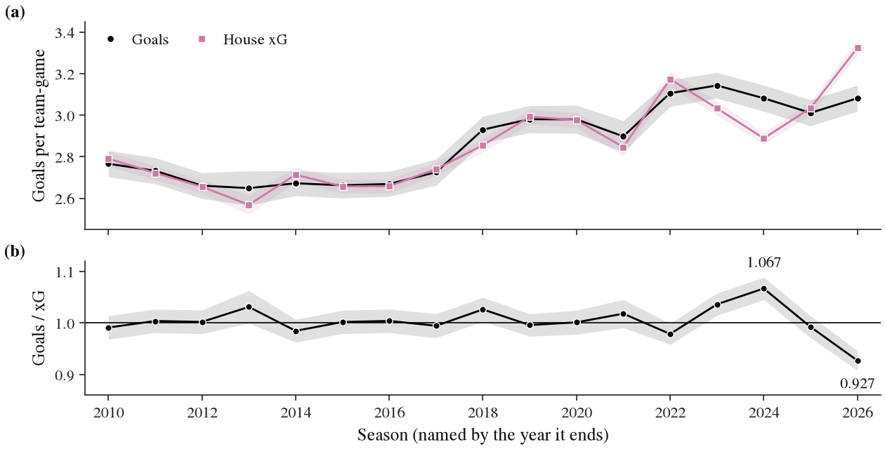
4 Evaluation protocol
4.1 Standing rules
Five rules applied to every model in the project.
Anything used to predict a game in season \(V\) is computed from seasons before \(V\) and from games of season \(V\) played strictly before it: scalers, calibration maps, embeddings, priors and coordinate normalisers included. The dressed lineup and the announced starting goalie are admissible, because both are public about an hour before the game.
No odds or market prices in any feature, target, calibration or selection step.
Quantities fitted by third parties on full-sample data are excluded; only raw recorded fields are admitted.
Era enters through walk-forward covariates (league scoring to date, overtime format, shootout and loser-point flags, a scaled season index), never through season indicators or full-sample normalisation.
Seeds are fixed and recorded. Neural training runs on Apple MPS, which is not bit-deterministic, so each trained checkpoint is identified by its SHA-256, every reported number comes from CPU inference over a saved checkpoint, and committed per-game predictions must re-derive within \(10^{-6}\).
4.2 Windows
Seasons were assigned to roles before any model was fitted (Table 1, Figure 2). For NeurHL 1.0 the windows are development (2009–2011), tune (2012–2017) and confirmation (2018–2026, touched once per layer), followed by the live 2027 season. Player-level layers use their own split: development on 2011–2012, tuning on 2014–2017, a declared evaluation window of 2022–2026 and a one-shot confirmation on 2018–2020. NeurHL-G, built after the 1.0 confirmation had spent 2018–2026 at game level, uses a fresh split of the same history: iteration on 2012 and 2014–2018 (7,421 games), gates on 2019, 2020 and 2022–2024 (6,289 games), and a sealed test on 2025–2026 (2,624 games). Those seasons had already been scored at game level by NeurHL-H, so the NeurHL-G seal protects against adaptive NeurHL-G choices; it is procedurally sealed, not unseen, and we treat the 2026–27 live season as the only clean test of NeurHL-G.
The windows are enforced in code. A scoring guard refuses to score an anomalous season or to cross a window boundary. For NeurHL-G, a single guarded loader is the only route by which model, training and evaluation code may read the data; it drops the sealed seasons unless an unseal function has been called, and that function refuses every caller except the seal script. A syntax-tree test fails any NeurHL-G module that reads the tensor directory directly, and the 37 sealed input files are pinned by hash.
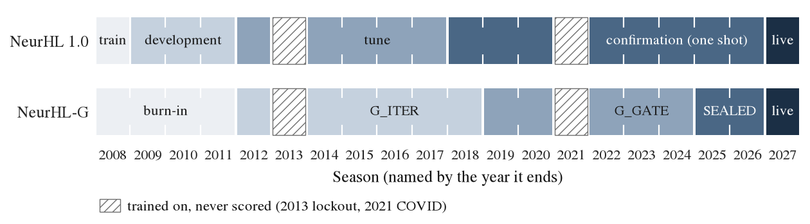
4.3 Commit before results
Every plan, amendment and candidate declaration was committed before the numbers that tested it existed, and every freeze before the confirmatory run it governs. Amendments are appended, never edited. The repository was not public before 26 September 2026, so for the plans written before then the ordering rests on the commit times recorded in its history, which a reader has to take on trust. From publication on, each push to the public repository is dated independently of the author: the NeurHL-G plan and its candidate declaration were both on the public branch before any NeurHL-G gate number existed, and every live forecast must be there before its game starts. Each plan fixes its gates with numbers, its search budget and the consequence of every outcome. Searches are logged row by row in ledgers with hard caps: 40 configurations for the first neural game model, 12 for the game-level work of the second and third plans, 10, 4, 4 and 4 for the player-game, player-season, goalie and expected-goals layers, and for NeurHL-G at most 14 full runs on the iteration window and at most two on the gate window, the second only as one declared change after a failure. Exceeding a cap voids the version.
Confirmatory tests are one-shot. Each has its own script that refuses to run before its freeze commit is on the public branch, refuses to run twice, and writes its result in a single step. A pre-gate on non-confirmatory seasons decides whether a confirmatory window is spent at all, so a weak candidate cannot consume it.
4.4 Causality audits
Gates that score a model on the inputs it was trained with cannot detect an illegitimate input: a leaked feature improves in-sample realism along with everything else (Section 7). Every data builder therefore passes a causality audit before any gated number is reported from its output. The audit corrupts every row after a cut date, rebuilds the features, and requires every value before the cut to be bit-identical. For the event simulator the same test runs at the level of individual model inputs, together with a target-identity check (no input may agree with any target above 98%) and an empirical check that exempted inputs carry no lift on the next event. The NeurHL-G state builders are audited the same way, with cuts in mid-season 2016 and at the boundary between the last gate season and the first sealed one; all 100 skater-state, 23 goalie-state and 53 team-state features are bit-identical before each cut.
4.5 Statistics
The primary metric for win probabilities is per-game log loss, compared between models as a mean paired difference over the same games. We report a normal-approximation test on the per-game differences, a season-clustered \(t\) test, a wild cluster bootstrap on seasons that enumerates all \(2^S\) Rademacher sign patterns exactly, a moving-block bootstrap over date-ordered games (blocks of 100 games, 9,999 draws, seed 711), a sign test across seasons, and the Murphy decomposition of the Brier score into reliability, resolution and uncertainty. A log-loss gain with no gain in resolution is reported as recalibration, not information. Player-level differences use standard errors clustered two ways, by player and by game (Cameron et al. 2011), and families of tests are Holm-corrected. Count predictions are assessed with Poisson deviance, the continuous ranked probability score and randomised probability integral transforms.
Power is stated before each test. On the tune window, one standard error of a paired log-loss difference against Elo is 0.00268 nats. A gate of the form “beat Elo by 0.002” is therefore a 0.75-standard-error bar, which a model with no skill clears by chance 23% of the time. The first plan’s second amendment made a significance test the headline criterion for exactly this reason, and every later plan kept it.
5 Models
Figure 3 shows how the components fit together. All of them are walk-forward: the model that predicts season \(T\) is fitted on seasons before \(T\) only.
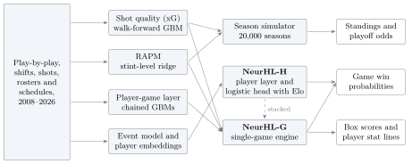
5.1 Baselines
The primary comparator is the house Elo system (“v1”), tuned on 2006–2017 before any NeurHL work began. Before each game with ratings \(r_h\) and \(r_a\) and home advantage \(H\), the expected home score is \[\begin{equation} E_h = \bigl(1 + 10^{-(r_h + H - r_a)/400}\bigr)^{-1}. \end{equation}\] After the game both ratings move by \(\pm K M (y - E_h)\), where \(y\) is the home result and \(M = \ln(|\Delta g| + 1)\cdot 2.2 / (2.2 + 0.001\,d_w)\) is a margin-of-victory multiplier that shrinks with the winner’s rating advantage \(d_w\). Between seasons each rating regresses toward the mean, \(r \leftarrow \mu + \phi (r - \mu)\). The frozen parameters are \(K = 6\), \(H = 35\) and \(\phi = 0.7\). Game probabilities come from walk-forward logistic models of the rating difference: the probability of reaching overtime, the regulation winner, and the overtime or shootout winner. We also report a constant home-win rate, and “Tier-0”, the stronger of a standardised logistic regression and an early-stopped gradient-boosted model (Chen and Guestrin 2016) on 23 engineered game features (Elo difference, rest, travel, goalie form, roster aggregates, era), which scored 0.67692 on 2014–2017 against Elo’s 0.67548.
5.2 Shot quality
The expected-goals model is a histogram gradient-boosted classifier (Friedman 2001; Ke et al. 2017) (400 iterations, learning rate 0.06, 31 leaves, at least 200 shots per leaf, L2 penalty 1.0, early stopping) on 33 features: distance and angles, rebound and rush indicators, the previous event’s type, distance, angle and elapsed time, speed from the previous event, strength state and empty nets, score difference, period, shooter handedness and position, shot type, and walk-forward era and rink covariates. For vantage \(V\) the model is fitted on seasons before \(V-1\). Its calibration map is isotonic, refitted every 25 league games on the most recent 120,000 out-of-sample shots strictly before the game being scored, so it follows the recording drift with the data in which the drift occurs. The model beats a distance-and-angle logistic regression in all 18 vantages (gate X1), and team expected-goal differential predicts future goal share better than shot-attempt (Corsi) differential across 554 team-seasons, \(r = 0.423\) against \(0.395\) (gate X2). It fails its calibration gate X3, a maximum deviation of 0.005 per decile, at 0.0065 after three declared correction ladders; the residual is concentrated in the top decile in the seasons of the recording change.
5.3 Adjusted plus-minus
RAPM is a stint-level ridge regression (Hoerl and Kennard 1970) of on-ice shot rates on indicator columns for the players on the ice, with an intercept, a home term and unpenalised team-season fixed effects, so that player coefficients measure performance relative to the player’s own team. The penalty, \(\lambda = 51{,}200\), is chosen to maximise how well a prior rating predicts a player’s realised on-ice results after he changes team. RAPM priors are computed as of each season and feed the season simulator and NeurHL-G.
5.4 Event simulator
The event simulator is a Transformer-Hawkes marked temporal point process (Zuo et al. 2020) over the unified event and line-change stream, with heads for the time to the next event, its type and team, location, zone and actor, and player effects entering as zero-initialised modulations of the hazard anchored on RAPM, in the spirit of Thomas et al. (2013). It has 5.3 million parameters and is trained as a five-seed ensemble. After the two leaks described in Section 7 were removed it reproduces goals, shots, penalties and faceoffs per game and per period within 10% of observed rates, and its score effects match observed ones with a gradient ratio of 0.979. Its score-effect curve initialises the NeurHL-G hazard table.
5.5 Player-game layer
The player-game layer predicts, for every dressed skater, his share of team ice time, his shots on goal, and the probabilities of scoring at least one goal and recording at least one assist. It chains four histogram gradient-boosted models in the order opportunity, volume, conversion: predicted usage feeds the shot model, and both feed the two binary models. Declared feature blocks cover the player’s own recent form (the baseline’s inputs, nested), usage structure by strength, line rank and power-play unit, opportunity created by absent teammates, opponent and schedule context, and line and coaching patterns. Binary heads are calibrated isotonically on the previous season’s out-of-sample predictions, and ice-time shares are renormalised within each team-game so they sum to one exactly.
5.6 Season simulator and player seasons
The season simulator integrates team scoring rates, roster RAPM and score effects over each game of the real schedule and simulates 20,000 seasons, drawing each team’s strength once per simulated season (\(\sigma = 0.07\)) so that uncertainty about how good a team is persists through the season. Player season projections blend a gradient-boosted season model with the player-game layer summed over the schedule under an availability hazard, 50/50, the combination a declared rule selected.
5.7 NeurHL-H
NeurHL-H has three layers. Layer 1 predicts what each player will do in a game: his on-ice shot attempts for and against per 60 minutes, close-range attempts for and against, and his ice time. It is residual on the player’s own exponentially weighted history: a two-hidden-layer network (128 units, GELU, dropout 0.1) maps a 64-dimensional player embedding from the event model, 13 static features (position, age and age squared, career games, games with the current team, a recent-move flag, home, rest, team game number, games played this season, a late-season flag) and six history features to multiplicative corrections bounded by \(\pm 0.7\) in log space, with a zero-initialised output layer so that training starts at the baseline. It is trained walk-forward on about 750,000 player-games. Layer 2 aggregates the predictions over the players actually dressed, weighted by predicted ice time, into team projections: projected attempt share and close-range share. Layer 3 is a thin head, a standardised logistic regression on four inputs, the Elo logit, the projected attempt-share difference, the projected close-range difference and the rest difference, refitted for each season on all earlier seasons. Its regularisation constant is selected on training loss, a known weakness that favours weak regularisation; it was kept verbatim for the confirmation because changing it would have tested a different model.
5.8 NeurHL-G
NeurHL-G predicts one game from the two dressed lineups and simulates its box score. Figure 4 summarises the architecture.
State.
After every game each skater’s state is updated by discounted sums of his per-game statistics with per-game decays 0.98, 0.95, 0.85 and 0.60. Rates are ratios of discounted sums, reported with their effective sample sizes, beside season-to-date and career totals and as-of priors (the RAPM prior and the event-model embedding fitted on earlier seasons only). The 114 skater features cover ice time by strength, individual shots, attempts and expected goals, goals, assists, on-ice expected goals for and against, and penalties. Goalie state (23 features) includes shrunk save percentage, goals saved above expected per expected goal, and workload. Team state (57 features) holds discounted team rates, and context (10 features) holds the Elo logit, rest, travel, time-zone change and era covariates. A game late in a season therefore sees every earlier game of that season as well as all earlier seasons.
Network.
Shared encoders map each skater (114 features plus position, \(\to 128 \to 64\)), each team (\(57 \to 64 \to 32\)), each goalie (\(23 \to 32 \to 16\)) and the context (\(10 \to 32 \to 16\)), each a linear layer, GELU, layer normalisation, dropout 0.2 and a linear layer. Heads produce residual corrections with zero-initialised output layers: 12 per skater (ice time by strength, shot, attempt and expected-goal propensities, finishing, playmaking, offensive and defensive on-ice effects, penalties drawn and taken), six per team and one per goalie. The untrained network therefore reproduces shrunk-history baselines exactly. The model has 48,810 parameters.
Team layer.
The team layer is deterministic and conserves ice time. With \(o\) the opponent of side \(s\), power-play opportunities have mean \(\lambda^{pp}_s = \mathrm{log5}(\text{drawn}_s, \text{taken}_o)\,e^{\delta_s}\), where \(\mathrm{log5}(a, b) = ab/L\) for league rate \(L\) (Hammond et al. 2015), and \(\delta_s\) collects the skaters’ penalty terms. Power-play time is \(T^{pp}_s = \tau \lambda^{pp}_s\), short-handed time is the opponent’s power-play time, and even-strength time is \(T^{ev} = 60 - T^{pp}_s - T^{pp}_o\) minutes. Player \(i\)’s ice time at strength \(k\) is \[\begin{equation} \mathrm{TOI}_{ik} = n_k\, T^{k}\, \mathrm{softmax}_{j \in \mathcal{P}(i)}\bigl(b_{jk} + \delta_{jk}\bigr)_i, \end{equation}\] a softmax over the player’s position group \(\mathcal{P}(i)\) with \(n_k\) players on the ice (three forwards and two defence at even strength, five skaters on the power play, four short-handed), so team ice time is exact by construction. Team scoring rates are log-linear: \[\begin{equation} \log r^{ev}_s = \log \mathrm{log5}\bigl(\mathrm{xGF60}_s, \mathrm{xGA60}_o\bigr) + \sum_{i \in s} w_i\, \mathrm{off}_i - \sum_{j \in o} w_j\, \mathrm{def}_j + \delta^{tm}_s, \end{equation}\] where \(w\) are ice-time weights and the team rates are shrunk toward league values by their effective sample sizes. Player shots, attempts, expected goals, goals, assists and on-ice expected goals are softmax allocations of team totals, so they sum exactly, and team goals are expected goals times a finishing term less the opposing goalie’s effect.
Outcome.
Win probabilities come from a differentiable integration over the goal differential, a Markov chain in the spirit of Kaplan et al. (2014). Let \(\lambda_h, \lambda_a\) be the two regulation scoring rates. The distribution of the differential \(d \in \{-8, \dots, 8\}\) evolves over 30 steps of two minutes. In each step side \(s\) scores with probability \(q_s = 1 - \exp\{-\lambda_s e^{u}\,\Delta t\, e^{\eta(\ell_s, \pi)}\}\), where \(\ell_s \in \{-3, \dots, 3\}\) is the side’s own lead (clamped), \(\pi\) indexes five game phases (minutes 0–40, 40–50, 50–56, 56–58, 58–60), and \(\eta\) is a learned \(7 \times 5\) hazard table initialised from the event simulator’s score effects (compare Thomas et al. 2013). Trailing teams push, leaders sit back, tied teams turn cautious late, and the last minutes capture pulled goalies. The pace shock \(u = \sqrt{2}\,\sigma x - \sigma^2/2\) is shared by both teams and integrated with five-node Gauss–Hermite quadrature (Abramowitz and Stegun 1964), which supplies the tie mass by mechanism rather than through an ad hoc scalar. The probability of a regulation tie is the mass at \(d = 0\), and the overtime or shootout winner is a logistic function of \(\log(\lambda_h/\lambda_a)\). The output is the four-way outcome: home or away win, in regulation or after it.
Training.
Snapshot \(T\) is trained on seasons 2009 through \(T-1\). Phase 1 minimises Huber losses on ice time by strength and on power-play minutes, Poisson deviances on skater and team counts, and the four-way outcome negative log likelihood with weight 0.3 (AdamW (Loshchilov and Hutter 2019), learning rate \(2\times10^{-3}\), weight decay 0.01, one-cycle schedule, batches of 256 games, 10 epochs). Phase 2 raises the outcome weight to 1 and trains four more epochs at learning rate \(3\times10^{-4}\), with an L2-SP penalty (Li et al. 2018) of \(10^{-3}\) toward the phase-1 weights. The ensemble averages five seeds.
Final probability.
For each season \(T\) a logistic stack (Wolpert 1992) over the Elo logit, the NeurHL-G logit and the NeurHL-H logit is fitted on out-of-sample predictions from earlier seasons. The column subset, which always includes Elo, is chosen by leave-one-season-out cross-validation on the training seasons, with a fallback to Elo and NeurHL-G where NeurHL-H is unavailable.
Stat sheet.
Box scores are simulated 10,000 times per game and are consistent with the win probability by construction. Each draw samples the outcome category from the stacked four-way probabilities, then a regulation score conditional on it, then team shots (negative binomial around the model mean, \(r = 40\), floored at goals), team expected goals (gamma), power-play opportunities (Poisson), player shots and goals (multinomial splits by the model’s shares), assists (zero, one or two per goal in the league’s typical mix, split by assist shares), individual expected goals (Dirichlet split) and goalie saves.
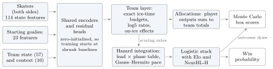
6 Results
We report confirmed results first, then the NeurHL-G gate evidence, then the development-only season results and the null results. A result is confirmed only if it came from a window no decision had used, scored once after the model was frozen. Results from windows that were consulted during development are exploratory.
6.1 Confirmed: the player-game layer
The player-game layer was frozen after development and scored once on the player confirmation window, 2018–2020: 130,092 skater-games by 1,152 players in 3,624 games. The comparator is each skater’s own recent history: an exponentially weighted average (\(\alpha = 0.1\)) for ice-time share and shots, renormalised over the dressed skaters, and for the two binary targets a walk-forward shrunk average \(\hat p = (n\,\bar x + k\,p_0)/(n + k)\) (Efron and Morris 1975) with \(k\) chosen on the previous season. This is a demanding baseline: in the first plan a neural player-rate model had lost to it on ice time and shots (Table 7). Table 2 shows the result. The layer is better on all four targets, in every season, with two-way clustered \(z\) statistics between \(-8.1\) and \(-23.9\) and Holm-adjusted \(p < 10^{-5}\).
| Target | Loss | Relative difference | \(z\) (two-way) | Seasons better |
|---|---|---|---|---|
| Ice-time share | MAE | \(-4.1\%\) | \(-23.9\) | 3/3 |
| Shots on goal | Poisson deviance | \(-10.2\%\) | \(-13.7\) | 3/3 |
| P(goal \(\geq 1\)) | log loss | \(-2.8\%\) | \(-8.1\) | 3/3 |
| P(assist \(\geq 1\)) | log loss | \(-2.6\%\) | \(-15.9\) | 3/3 |
6.2 Confirmed: NeurHL-H against Elo
NeurHL-H was frozen exactly as it had been evaluated on the tune window, the freeze and the test were committed in an amendment before any 2018–2026 game was scored by any NeurHL-H artifact, and the test ran once. The primary set is the eight structurally normal seasons of 2018–2026 (\(n = 10{,}184\) games; 2021 excluded). Table 3 and Figure 5 give the results.
| Quantity | Value |
|---|---|
| Log loss, NeurHL-H / Elo | 0.66495 / 0.66973 |
| Mean paired difference (SE) | \(-0.00478\) (0.00088) |
| 95% CI, normal / moving-block bootstrap | [\(-0.00650\), \(-0.00306\)] / [\(-0.00660\), \(-0.00293\)] |
| Per-game test | \(z = -5.46\), \(p < 10^{-6}\) |
| Season-clustered \(t\) (7 df) | \(t = -5.71\), \(p = 0.0007\) |
| Wild cluster bootstrap, exact (\(2^8\) patterns) | \(p = 0.0078\) |
| Seasons better; sign test | 8 of 8; \(p = 0.0078\) |
| Including 2021 (\(n = 11{,}052\)) | \(-0.00459\) [\(-0.00622\), \(-0.00295\)], 9 of 9 |
| Brier score, NeurHL-H / Elo | 0.23630 / 0.23857 |
| Reliability, NeurHL-H / Elo | 0.00021 / 0.00025 |
| Resolution, NeurHL-H / Elo | 0.01218 / 0.00982 |
| Uncertainty | 0.24840 |
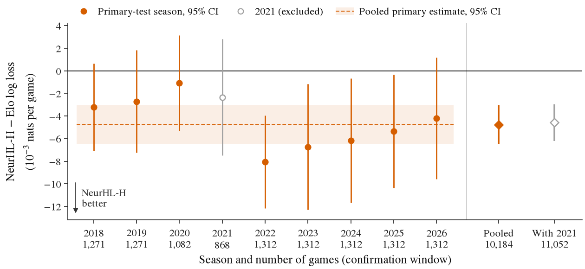
The effect is \(-0.00478\) nats per game (95% CI \(-0.00650\) to \(-0.00306\)), and it holds in every season. It is also the size the tune window had suggested (\(-0.00283\)), somewhat larger rather than smaller, and the amendment’s power table had put the chance of detecting an effect of the tune-window size at about 0.93. Measured against a constant equal to the window’s home-win rate (0.540, log loss 0.68995), Elo’s skill is 0.0202 nats and NeurHL-H’s is 0.0250, an increase of about 24%. The Murphy decomposition locates the gain: reliability is essentially unchanged and already small for both models, while resolution rises from 0.0098 to 0.0122. NeurHL-H is not a recalibrated Elo; it separates games that Elo treats alike. Figure 6 shows that both models are well calibrated across the probability range.
The gain is conditional on information Elo does not use. NeurHL-H reads which skaters dressed for each game, which is public about an hour before puck drop, and its Layer 1 translates those players’ histories and career context into projected shot shares. The confirmation therefore establishes that lineup-level player information improves on a strong team-level rating system, not that a network discovers team strength that Elo misses.
Where the gain comes from (exploratory).
To test whether the lineup is what NeurHL-H adds, we split the confirmation games after the fact by how lopsided the two teams’ absences were: the recent ice time of regulars who did not dress, home minus away, in minutes. The window is spent, so this analysis is exploratory. Its script stated two expectations before it ran: that the gain would grow with the imbalance, and that it would be largest early in the season, when rosters have changed and Elo has not yet seen them play. The first held and the second did not (Table 4). Where neither team was missing regular ice time the difference is \(-0.0003\) (SE 0.0045); it grows to \(-0.0087\) when the imbalance exceeds 40 minutes, a slope of \(-0.0010\) per 10 minutes (SE 0.0004). By month the gain is smallest in October and November and largest from December on. NeurHL-H does not move further from Elo when absences are lopsided (the mean absolute difference between the two probabilities is 0.034 to 0.036 in every bin); its adjustments are simply more accurate there.
| Absence imbalance | Games | Difference (SE) | Month | Games | Difference (SE) |
|---|---|---|---|---|---|
| none | 367 | \(-0.0003\) (0.0045) | October | 1,316 | \(-0.0017\) (0.0023) |
| 0–20 min | 4,747 | \(-0.0029\) (0.0013) | November | 1,726 | \(-0.0022\) (0.0021) |
| 20–40 min | 2,928 | \(-0.0055\) (0.0016) | December | 1,674 | \(-0.0078\) (0.0021) |
| over 40 min | 2,142 | \(-0.0087\) (0.0020) | January | 1,600 | \(-0.0057\) (0.0023) |
| February | 1,318 | \(-0.0061\) (0.0024) | |||
| March | 1,712 | \(-0.0042\) (0.0022) | |||
| April | 837 | \(-0.0061\) (0.0032) |
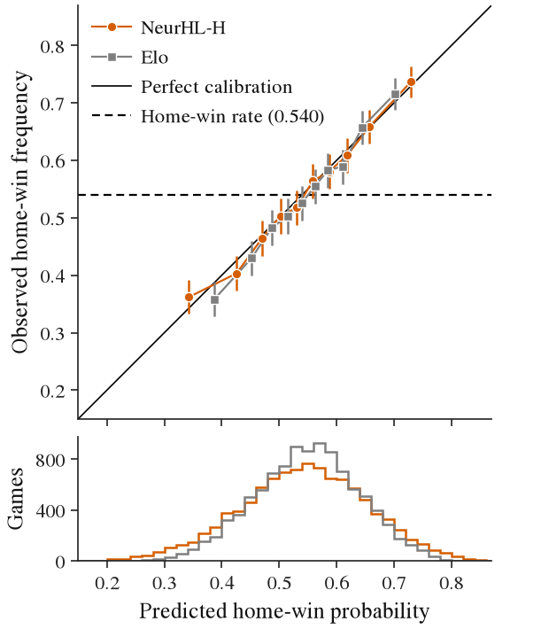
6.3 NeurHL-G: iteration, gates and the pre-gate
Iteration.
Table 5 and Figure 7 give the ladder on the iteration window, every run of which is in the search ledger. The non-neural engine (player-game sums through the integration and the stack) and the tree-based rung did no better than Elo. The network with official power-play targets (R6) improved on Elo by 0.0023 but did not reach NeurHL-H. None of four additions earned its place under the declared adoption rule (a gain of at least 0.0003 without losing in four or more of six seasons): an Elo anchor on the scoring rates, lineup-versus-usual multipliers, NeurHL-H’s projections as team inputs, and attention across the two rosters. Stacking R6 with NeurHL-H (R11) gave the best stack, 0.67258, still 0.00014 behind NeurHL-H alone. The paired standard error of each rung’s difference from NeurHL-H is 0.0007 to 0.0009, larger than most gaps between rungs, so the ladder shows the absence of a large gain rather than a reliable ordering. The candidate declared for the gate, g1, is R11 with the five-seed ensemble. The candidate commit recorded, before the gate ran, the expectation that the pre-gate would fail.
| Rung | Change | Log loss |
|---|---|---|
| R1 | Elo | 0.67528 |
| R2 | NeurHL-H | 0.67244 |
| R3 | gradient-boosted trees / logistic on game features, Elo-stacked | 0.67611 / 0.69699 |
| R4 | non-neural engine (quick protocol) | 0.67581 |
| R6 | network, official power-play targets | 0.67301 |
| R6e | + Elo anchor on scoring rates | 0.67330 |
| R6L | + lineup-versus-usual multipliers | 0.67299 |
| R6c | + NeurHL-H projections as team inputs | 0.67344 |
| R13 | R6c + direct NeurHL-H terms | 0.67344 |
| R9 | R6c + attention across rosters | 0.67366 |
| R11 | R6 stacked with NeurHL-H (candidate structure) | 0.67258 |
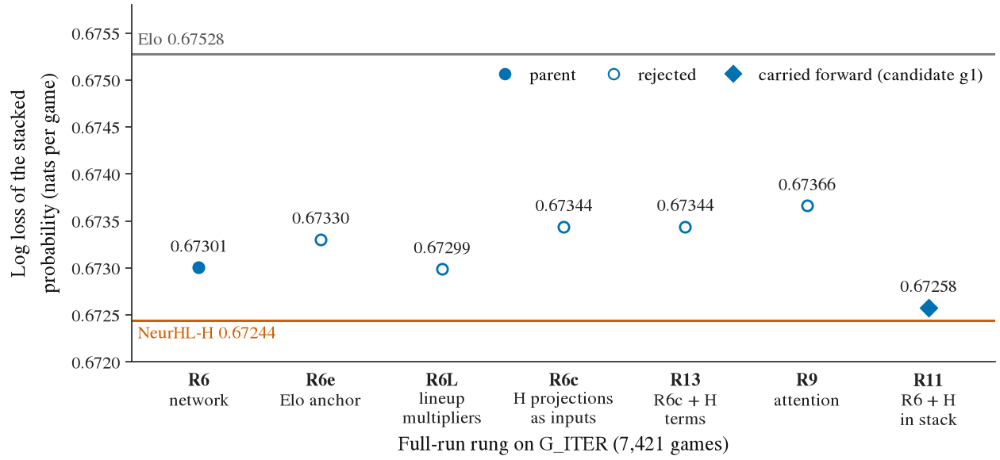
Gates.
The candidate was scored once on the gate window (6,289 games). Table 6 summarises the gates and Figure 8 the per-season differences. The final probability beats Elo by 0.00559 nats (SE 0.00131), in all five seasons, a margin comparable to NeurHL-H’s confirmed one. It beats NeurHL-H by only 0.00049 (SE 0.00060), in three of five seasons. The pre-gate required both a gain of at least 0.0045 over Elo and a gain of at least 0.0010 over NeurHL-H, each in at least four of five seasons. The first condition holds and the second does not, so the pre-gate failed and, as the plan declared, the sealed seasons were not spent. At the sealed test’s size the minimum detectable effect at 80% power would have been 0.0057 against Elo and 0.0026 against NeurHL-H.
| Gate | Result |
|---|---|
| Final probability vs Elo | \(-0.00559\) (SE 0.00131), 5 of 5 seasons |
| Final probability vs NeurHL-H | \(-0.00049\) (SE 0.00060), 3 of 5 seasons |
| Pre-gate (S-STOP) | fail: the NeurHL-H condition is not met |
| PG: player heads vs the player-game layer | pass: ice-time share \(-0.59\%\), shots \(-0.45\%\) (Poisson log loss), P(goal) \(-0.45\%\), P(assist) \(-0.36\%\); every upper 95% bound below zero (two-way clustered) |
| T: team box score | pass: shots, expected goals, goals and power-play opportunities beat log5 team history; shots and goals also beat the summed player-game layer, on deviance and CRPS |
| C: calibration | fail: slope 0.968 and overtime share (0.224 predicted, 0.220 observed) pass; randomised-PIT 80% coverage passes for team goals (0.803) and skater shots (0.783) but not for team shots (0.860) |
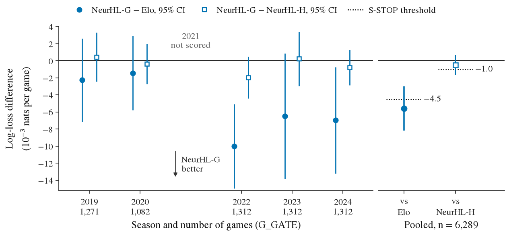
The stat sheet.
The engine’s player heads improve on the confirmed player-game layer on all four shared targets (Figure 9). The gains are small, between 0.36% and 0.59%, but every upper confidence bound is below zero. Its team box scores beat both declared baselines. Binned predictions track outcomes closely for shots; for expected goals and goals they are somewhat too spread at the extremes, so that the decile with the highest predicted regulation goals (4.2 per team-game) averaged 3.7 (Figure 10). The win-probability slope is 0.968, and the hazard integration reproduces the share of games that go past regulation without a tie scalar (22.4% predicted against 22.0% observed; Figure 11). One calibration check fails: the negative-binomial dispersion used for team shots makes those intervals too wide, covering 86% of outcomes at a nominal 80%.
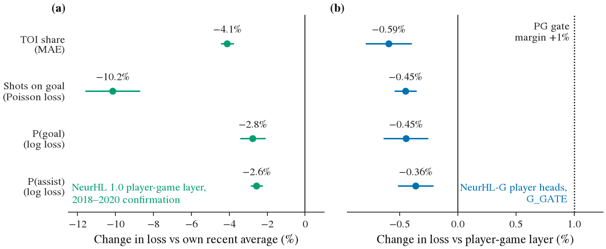
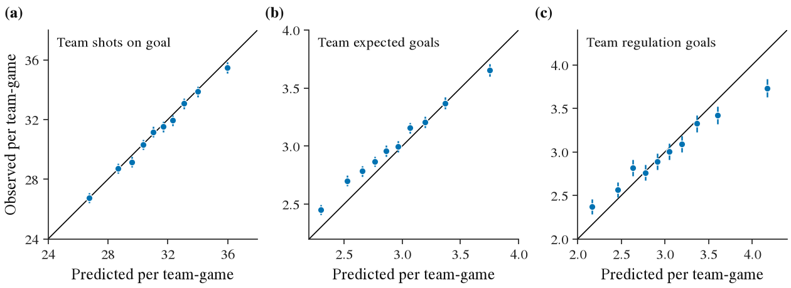
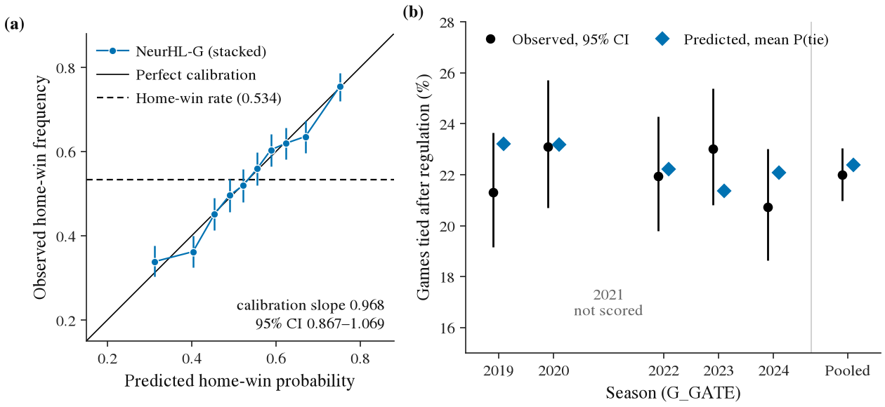
Reading.
Two independently built models that both condition on the dressed lineup, one a small residual network over player histories feeding a four-feature logistic head, the other a conservation-constrained engine that models every skater’s deployment and every team’s scoring process, arrive at nearly the same win-probability skill. On the iteration window the engine adds nothing beyond NeurHL-H, and on the gate window it adds an amount indistinguishable from zero. We read this as evidence that the binding constraint is the information available before the game, not the capacity or structure of the model; the engine’s value is that it produces a coherent box score at that same level of skill.
6.4 Development only: seasons and player seasons
The season simulator’s 80% intervals cover 0.794 of team-seasons, with a standings error of 9.61 points (MAE) and a CRPS of 6.93, pooled over the development and tune seasons. Its interval width was tuned on the same seasons, so these are development numbers. On the five seasons that both its record and the Elo baseline’s share, the Elo baseline is more accurate: 9.17 against 9.99 points MAE and a CRPS of 6.43 against 7.17, ahead in four of five seasons (\(p = 0.19\)). An earlier claim that the season layer beat the house benchmarks compared different seasons and is withdrawn (Section 7). For player seasons, the declared 50/50 blend of a gradient-boosted season model and the summed player-game layer had the lowest points error over 11 vantages (9.07 points per 82 games, against 9.41 and 9.77 for the two paths alone).
6.5 Documented nulls
Table 7 lists the hypotheses that failed. Two deserve comment. The first neural game model, a 1.2-million-parameter roster network over player embeddings from an event language model, finished level with a constant home-win rate. A regularised logistic regression on the same mean-pooled embeddings did no better (0.6888 against 0.6898), while two team-form features alone scored 0.6780, and adding the embeddings to form made it worse. A linear model cannot be accused of failing to optimise, so the signal was absent from the representation. The embeddings did learn something: position is linearly decodable from them with 95% accuracy, and linear probes recover \(R^2 = 0.54\) of points per 60 minutes and \(0.59\) of ice time per game, although neither was ever a training target. They encode what kind of player someone is, not how good his team is, and every roster carries a similar mix of roles. The second is the game-level reattempt of the third plan: four blocks of new information (absence-based replacement value, goalie quality, schedule density, schedule strength), each added to NeurHL-H’s head in a declared order, each made the pooled log loss worse, so no candidate reached the pre-gate.
| Hypothesis | Result |
|---|---|
| A neural game network over event-model player embeddings beats Elo | Five configurations; best 0.6966 against Elo 0.67585 and a constant 0.6898 (tune window) |
| Pooled player embeddings carry team strength | Logistic probe 0.6888, level with the constant; embeddings added to team form make it worse |
| A career encoder can place rookies | Validation error 0.99–1.00 of predicting the mean at every vantage |
| Neural player-rate heads beat a player’s own average | Worse on ice time (MAE 0.00934 against 0.00619) and shots; level with a shrunk average on goals |
| The event simulator’s rates beat Elo per game | Blend 0.67763 against Elo 0.67668; its pre-gate stopped the confirmation |
| Absences, goalie quality, schedule density or strength improve the game head | Each block adds log loss (+0.00024 to +0.00541) |
| A starter model beats simple heuristics | Season start share wins (log loss 0.66–0.68 against 0.71–0.77) |
| Goals saved above expected predicts next season better than shrunk save percentage | \(r = 0.159\) against \(0.218\); Steiger \(p = 0.007\) in favour of save percentage |
| RAPM transfers to a new team better than team-demeaned raw rates | Indistinguishable (movers \(r = 0.387\) against \(0.371\), \(p = 0.60\)) |
| The shot-quality model is calibrated to 0.005 per decile | Best 0.0065 after three declared correction ladders |
| NeurHL-G adds win-probability information beyond NeurHL-H | \(-0.00049\) (SE 0.00060) on the gate window; the pre-gate failed |
7 Failures and corrections
The protocol did not prevent mistakes. It made them visible, and it fixed in advance what each one would cost. This section records the ones that changed a result or a claim.
7.1 Leaks that realism gates could not see
The event simulator passed its preregistered realism gates, per-period event rates and score effects, with two leaks present. The first was an orientation flag equal to the team that owned the next event, which is the team component of the prediction target; it agreed with the target’s team in every held-out step. The second was worse. The model conditioned on the on-ice players at the next event, and because line changes happen at stoppages, a change in on-ice personnel announces the faceoff that caused it: when the next event’s on-ice set lost one skater, the next event was a faceoff with probability 0.986 against a base rate of 0.199. About 3,000 of 62,094 held-out steps were given a near-deterministic answer.
Neither gate could catch either leak, because both scored the model on the inputs it had been trained with, and a leaked input improves realism along with everything else. The first leak surfaced only when a downstream consumer had to supply the flag itself and produced a home scoring rate of 0.39 goals per 60 minutes against 3.30 for the away side; the second surfaced in the audit that followed. The fix conditions on the current on-ice set and fixes the orientation, which lowers the actor head’s ceiling honestly: the next actor is on the ice for 59.6% of steps, against the 82.7% the leaked version enjoyed. All earlier results for the simulator were voided and every seed was retrained. The lesson generalised into the standing causality audit of Section 4: leakage needs either a consumer that must supply every input itself or a direct test of causality; realism is not evidence of legitimacy.
7.2 A measurement drift
The shot-quality model’s calibration gate failed three times, and each failure was diagnosed on training-side seasons before the next correction was declared. First, the calibrator had been fitted on cross-validation folds and applied to a model trained on all the data, which was better calibrated than the folds, so calibration made it worse (maximum decile deviation 0.0088 against 0.0061 uncalibrated on a development vantage). Second, the recording change of Section 3 moved the meaning of a shot location from 2023 on; a calibrator frozen at the end of the previous season is exactly one season behind a moving target. The declared remedy refits the isotonic map within the season on trailing out-of-sample shots. Third, per-rink recording offsets were added as walk-forward covariates. The pooled maximum decile deviation fell from 0.0222 to 0.0124 and then to between 0.0060 and 0.0074 across the later declared stages, but never reached the 0.005 bar. The failure is recorded against the transition itself, which no walk-forward method can see before it happens.
The same drift reached NeurHL-G. Trained through 2024, it learned the older ratio of goals to expected goals and reads 2025–26-era expected goals as inputs, so a dry run on opening night projected 3.36 regulation goals per team-game against a league level near 3.0. Because the win-probability stack is fitted on the engine’s unscaled outputs and the box-score simulation conditions every score on the stacked outcome, the win probabilities are unaffected; only the stat sheet’s scoring level is. A declared amendment, committed before any 2026–27 game, scales the stat sheet’s goal means by a factor fixed before the season and updated walk-forward (Section 8).
7.3 Protocol corrections
A rule changed with the result in view.
The first plan’s fourth amendment required every headline result to be reported both with and without the anomalous seasons. A later plan replaced that rule with a simpler one, train but never score 2013 and 2021, and called the replacement a verbatim carry-over. It was not: the replacement was written after tune-window results were visible, and the commit that introduced it also recorded NeurHL-H’s tune-window pass (\(p = 0.0075\)). Between the committed tune failure (\(p = 0.120\)) and that pass, three defensible things had changed on the same window: the scored seasons, two corrections to Layer 1, and the scoring rule. Together they were decisions taken with the result in view. A later amendment reclassified the tune-window result as exploratory, required it to be reported under every scored set (\(p\) from 0.0075 to 0.019), and declared the one-shot confirmation reported in Section 6.2.
A comparison across different seasons.
An early summary stated that the season layer beat both house benchmarks. The benchmark figure came from 2018–2026 and the NeurHL figure from 2011–2017. On matched seasons the Elo baseline is better (Section 6.4); the claim is withdrawn.
Reliability is not validity.
The first RAPM gate required split-half reliability above that of raw on-ice shot share, and RAPM failed it (offence 0.656 against 0.789). The gate was wrong: raw on-ice rates are more repeatable because they are contaminated, as a player keeps the same linemates, zone starts and competition in both halves, and RAPM removes exactly those terms. Ranking rating systems by reliability rewards confounding. The gate was retired and replaced by predictive transfer to a new team, on which RAPM tied a one-line team-demeaned baseline.
Gates implemented short of their declaration.
While writing this paper we found that the script implementing NeurHL-G’s gates had omitted three declared components: the randomised-PIT coverage criterion of the calibration gate, the comparison against the summed player-game layer, and CRPS. The calibration gate had been judged on its slope and overtime share alone and recorded as a pass. Computed afterwards from the same saved predictions, with nothing refitted, the team-box-score comparisons pass but the coverage for team shots is 0.860 against a nominal 0.80 and a tolerance of 0.03, so the calibration gate fails as declared. The correction was appended to the plan as a dated amendment. It changes no decision, because the pre-gate had already failed on its NeurHL-H condition, but it changes a public claim, and Table 6 reports the corrected record.
8 The 2026–27 prospective test
Every season through 2026 has now been used at game level by some part of NeurHL, so the 2026–27 season, which begins on 29 September 2026, is the only data on which all the models can be tested cleanly. Two sets of predictions are scored.
Frozen preseason predictions.
On 25 September 2026, four days before opening night, NeurHL 1.0 committed static predictions with their SHA-256 hashes: a home-win probability for each of the 1,344 regular-season games, team points with 80% intervals and playoff probabilities from 20,000 simulated seasons, and goals, assists and points for 711 skaters. The scoring plan fixes the statistics in advance (per-game log loss against the preseason Elo reference; standings error and interval coverage against a house benchmark; skater points error for the shipped blend and its two components), states the expected outcomes, including that Elo is expected to win the per-game comparison because the season engine behind these probabilities scored worse than Elo on the tune window, and allows one inference only, after the last regular-season game. After the NHL roster deadline on 28 September a dated update re-runs the same frozen models on the final rosters, with availability entries such as a goaltender suspended by his club removed. It is hashed and scored beside the originals, which remain primary.
Game-day forecasts.
NeurHL-G is live as an exploratory model and NeurHL-H as the primary win-probability model. The live engine is the candidate trained through 2024. Its stack, fitted on out-of-sample predictions for 14,940 games of 2011–2024, puts coefficients of 0.21, 0.29 and 0.58 on the Elo, NeurHL-G and NeurHL-H logits (0.63 and 0.46 on Elo and NeurHL-G when NeurHL-H is unavailable). Each game day produces a morning forecast at about 11:00 Eastern time with projected lineups and a pregame forecast 45 to 75 minutes before the scheduled start with the latest lineups and starting goalies. Each forecast records where its lineup came from: the league’s own game data, confirmed lines, projected lines, or a fallback built from the team’s last dressed roster minus unavailable players. A forecast counts only if the commit that adds it is on the public repository’s main branch before the scheduled start, checked against the remote and dated independently by a hosted continuous-integration run. A game without a valid forecast is counted as missed for every model, so that missing data cannot favour one of them, and nothing is backfilled. The pregame forecast is primary and the morning forecast secondary. In-season Elo and NeurHL-H, fed the same lineups, are scored on the same games, and the frozen 1.0 probabilities are reported descriptively. Inference is made once, after the last regular-season game, with a bootstrap over weeks of play. With about 1,300 games the standard error of a paired difference is about 0.0024, so only gaps of about 0.007 or more are likely to be resolved within the season.
The stat sheet’s scoring level.
Because of the recording drift, NeurHL-G’s stat sheet is scaled by a declared factor \(m\) that multiplies regulation goal means (and so assists) and leaves win probabilities unchanged. Before the season, \(m_0 = L / M\), where \(L\) is the previous season’s league regulation goals per team-game computed from the era inputs the model already receives and \(M\) is the engine’s own mean projected regulation goals over every game in the first 14 days, computed from roster fallback lineups. In season, \[\begin{equation} m = \frac{A + kL}{P + kM}, \qquad k = 300 \text{ team-games}, \end{equation}\] where \(A\) and \(P\) are the actual and unscaled predicted regulation goals over completed 2026–27 games that have a primary forecast, so the factor moves from \(m_0\) toward the observed ratio as games accumulate and a forecast only ever uses games already finished. On rosters from the day before the deadline the factor was 0.922; it is fixed on the final rosters before the first game.
What the season can show.
A single season cannot confirm effects of the size reported in Section 6. Its purpose is prospective accountability: every forecast is public before the event it forecasts, the scoring rules are fixed, and the results will be published whatever they show. We will report them in a revision of this paper after the regular season ends on 10 April 2027.
9 Discussion
Information, not capacity.
The same pattern recurs at every level of the project. A 1.2-million-parameter roster network over event embeddings finished level with a constant; a linear probe on the same embeddings did no better; two team-form features beat both. Tree ensembles on engineered game features did not beat Elo. A small residual network that reads the dressed lineup did beat Elo, confirmed on eight seasons, and a far more structured engine that models every skater’s deployment and every team’s scoring process reached the same skill and no more. What moved the result was information that Elo does not use, namely who is dressed and what those players have done, rather than any particular architecture. The exploratory split in Section 6.2 points the same way: NeurHL-H’s gain is near zero when neither team is missing regulars and largest when one team is missing far more than the other. We expect further gains to come from new information available before a game, such as tracking data, line deployment and injury reports with dates, rather than from larger models of the information already used.
What preregistration changed.
The protocol altered this project’s conclusions in concrete ways. It turned an apparently significant tune-window result into an exploratory one and forced a one-shot confirmation, which then passed. It withdrew a season-level claim that rested on mismatched seasons. It retired a gate that would have selected the more confounded rating system. It kept two confirmatory windows unspent when pre-gates failed, including NeurHL-G’s sealed seasons, which remain available to a better candidate. It recorded, before the gate ran, that NeurHL-G was expected to fail its pre-gate, so the failure cannot be explained away afterwards. None of these outcomes flatter the models; all of them make the confirmed results more credible.
Audits over gates.
Both leaks in the event simulator passed every realism gate, and the gate implementation errors in Section 7 passed our own review until the results were written up in full. Gates check what a model does with its inputs; they do not check the inputs or the checkers. The two mechanisms that caught these problems were a consumer that had to supply every input itself and a direct causality test, and the act of restating every gate against its declaration for publication.
Limitations.
The NeurHL-G gate seasons had been scored at game level by NeurHL-H before NeurHL-G existed, so the gate result is evidence, not confirmation. The evaluation covers one league and seasons 2008–2026, whose most recent years include a change in how shots are recorded. Market data were excluded by design and no historical odds exist in the repository, so we cannot say how close the models come to the market. NeurHL-H’s head selects its regularisation on training loss, a weakness kept for the confirmation. Several claims about the season layer and player seasons rest on development evidence only. Neural training is not bit-reproducible on the hardware used, which we address by hashing checkpoints and reporting CPU inference, but a retrained model will differ slightly from the published one. Finally, in-season expected goals for 2026–27 depend on a third-party shot file being published on time.
Future work.
The live season will provide the first clean test of NeurHL-G and a second, prospective test of NeurHL-H. The sealed seasons 2025–2026 remain available for a single confirmatory test of a future NeurHL-G candidate under a new plan, which could spend it with one declared change after the failed pre-gate, as the current plan allows, or with a new model that brings new information. Candidate information sources include player tracking data, available from 2022 but absent from most of the history, deployment models that predict line combinations, and injury and scratch reports with reliable timestamps.
10 Conclusion
Under a protocol that fixed windows, gates and consequences in advance, a neural player-level model conditioned on the dressed lineup beat a tuned Elo system on eight held-out NHL seasons by 0.0048 nats per game, with a confidence interval that excludes zero comfortably and a gain that comes from resolution. A chained player-game model beat each skater’s own history on all four of its targets. A single-game simulation engine reached the same win-probability skill as the confirmed model while producing a coherent box score, but did not exceed it, so its sealed test was kept for a future version. Most of what we tried did not work, and the record of those failures, including our own errors, is part of the result. All forecasts for the 2026–27 season are public before their games and will be scored once, at the end of the season.
Code and data availability.
Code, preregistrations, search ledgers, committed predictions and the acceptance tests that re-derive them are at https://github.com/ph05/neurhl. Raw play-by-play, shift and tensor files are not redistributed; the repository’s fetchers rebuild them from the public sources named in Section 3.
References
Appendix A. Preregistration timeline
Table 8 lists the commits that fixed each plan, amendment, candidate and freeze, with their commit times (Eastern time). The repository became public on 26 September 2026; earlier times are as recorded in its history, and later commits are also dated by their push to the public branch. Commit identifiers quoted inside the plan documents predate publication and are mapped to the public history in neurhl/configs/commit_map.csv.
| Date | Time | Commit |
|---|---|---|
| 20 Aug | 10:38 | First plan locked with tune-window baselines, before any gate ran |
| 20–21 Aug | Amendments 1–4 (team form; significance test S1; shot-based form; lockout season), each before its run | |
| 21 Aug | 13:32 | Second plan (event simulator, season layer), before any of its numbers |
| 21 Aug | 23:17 | Amendment 8: two simulator leaks recorded; earlier simulator results voided |
| 24 Aug | 14:48 | Third plan (player, goalie and game layers) and the rink ladder |
| 25 Sep | 14:46 | First plan, Amendment 5: record correction and the frozen one-shot confirmation of NeurHL-H |
| 25 Sep | 15:06 | Live plan: 2026–27 predictions frozen with hashes |
| 27 Sep | 12:33 | Fourth plan (NeurHL-G), before any NeurHL-G number |
| 27 Sep | 16:07 | NeurHL-G candidate declared, before any gate number |
| 27 Sep | 17:24 | NeurHL-G freeze: gate results, pre-gate failed, seal unspent |
| 27 Sep | 17:55 | Stat-sheet goal-level amendment, before any 2026–27 game |
| 27 Sep | 22:56 | Gate record correction (Section 7) |
Appendix B. NeurHL-G configuration
| Setting | Value |
|---|---|
| Skater, goalie, team, context features | 114, 23, 57, 10 per game side |
| State decays (per game) | 0.98, 0.95, 0.85, 0.60 |
| Encoders | skater 116–128–64; team 57–64–32; goalie 23–32–16; context 10–32–16 |
| Heads (zero-initialised output) | skater 112–64–12; team 112–64–6; goalie 32–32–1 |
| Activation, normalisation, dropout | GELU, layer norm, 0.2 |
| Parameters | 48,810 |
| Hazard table | 7 leads \(\times\) 5 phases, initialised from the event simulator |
| Integration | goal differential \(-8\) to 8; 30 steps of 2 minutes; 5 Gauss–Hermite nodes |
| Phase 1 | 10 epochs, AdamW, learning rate \(2\times10^{-3}\), weight decay 0.01, outcome weight 0.3 |
| Phase 2 | 4 epochs, learning rate \(3\times10^{-4}\), outcome weight 1, L2-SP \(10^{-3}\) |
| Batch, schedule, gradient clip | 256 games, one-cycle, 5.0 |
| Training seasons for snapshot \(T\) | 2009 to \(T-1\) |
| Ensemble | 5 seeds |
| Final probability | logistic stack over Elo, NeurHL-G and NeurHL-H logits; subset by leave-one-season-out cross-validation |
| Stat sheet | 10,000 draws per game; team shots negative binomial, \(r = 40\) |
Appendix C. Definitions
Log loss and paired differences.
For a home-win indicator \(y_g\) and forecast \(p_g\), the per-game log loss is \(\ell_g = -y_g \log p_g - (1 - y_g)\log(1 - p_g)\). Model comparisons use \(\bar d = n^{-1}\sum_g (\ell^{A}_g - \ell^{B}_g)\) over the same \(n\) games.
Murphy decomposition.
With forecasts grouped into bins \(k\) of size \(n_k\), mean forecast \(\bar p_k\) and observed frequency \(\bar y_k\), and overall frequency \(\bar y\), the Brier score is reliability minus resolution plus uncertainty: \(n^{-1}\sum_k n_k(\bar p_k - \bar y_k)^2 - n^{-1}\sum_k n_k(\bar y_k - \bar y)^2 + \bar y(1 - \bar y)\).
Randomised PIT.
For a count \(y\) with predictive distribution function \(F\), the randomised probability integral transform is \(u = F(y-1) + v\,[F(y) - F(y-1)]\) with \(v \sim \mathrm{U}(0, 1)\), as reviewed by Czado et al. (2009). Under a calibrated forecast \(u\) is uniform, so the share of \(u\) in \([0.1, 0.9]\) estimates the coverage of a central 80% interval without the over-coverage of discrete intervals.
Wild cluster bootstrap.
With \(S\) season-level mean differences \(\bar d_s\), the statistic is recomputed under every one of the \(2^S\) sign patterns \(\epsilon \in \{-1, 1\}^S\) applied to the season means, which gives an exact sign-flip \(p\)-value; with eight seasons the smallest attainable two-sided value is \(2/256 = 0.0078\).
log5.
For a team rate \(a\) and an opponent’s allowed rate \(b\) in a league with mean rate \(L\), \(\mathrm{log5}(a, b) = ab/L\).
Appendix D. Reproducibility
The repository needs Python 3.12 and uv; there is no environment to install. Four acceptance batteries re-assert every recorded gate decision against its declared rule, re-derive committed predictions on CPU within \(10^{-6}\), check ledger caps and window guards, and confirm that each one-shot window was spent at most once. At the time of writing they pass 25 of 25, 40 of 40, 25 of 25 and 10 of 10 checks. The frozen 2026–27 files and their SHA-256 prefixes are the game probabilities (85565efd), the team projections (4c60f50f), the skater projections (cc4cc26d) and the house benchmark (a4a693f4). Per-game predictions for the NeurHL-H confirmation and for the NeurHL-G iteration and gate windows are committed under neurhl/output/preds/, and every figure in this paper is regenerated from committed files by paper/figures/make_figures.py.